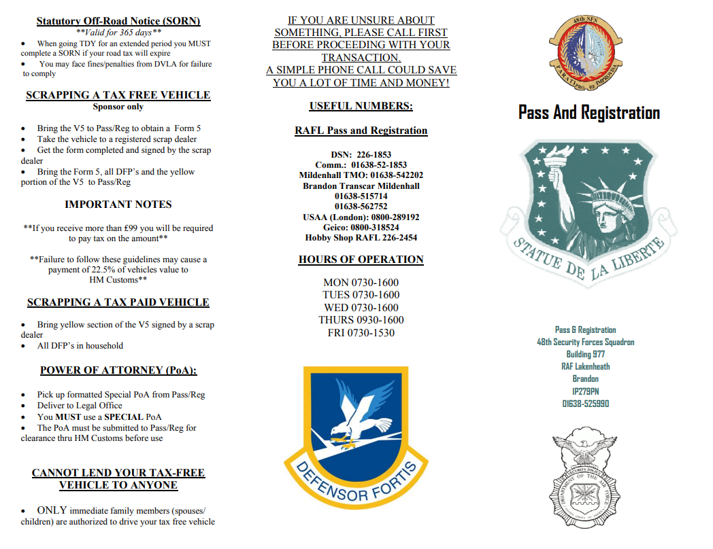
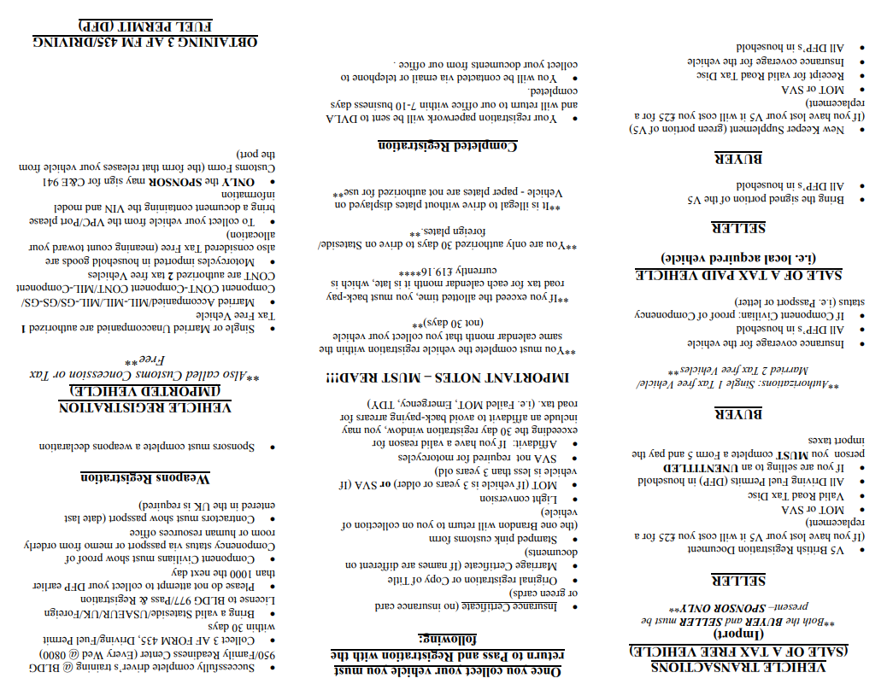

Getting your transportation sorted is one of the biggest hurdles when moving overseas, but we have broken down everything you need to know to hit the ground running. You can jump directly to the exact information you are looking for by clicking on any of the sections in the table of contents below, where we cover the strict rules for US vehicle importation, how to navigate UK vehicle purchases for a local car, your best options for Car rentals, arranging seamless Taxis from the Airport upon arrival, and the essential safety tips you need for Driving in the UK on the left side of the road.
US Vehicle Importation
Preparing to Import a Vehicle Drop Off/ Pick Up from Vehicle Processing Center (VPC) If Delivery Date is Missed Once Vehicle has Arrived Registering a Vehicle Obtaining License Plates Where You May Drive While Waiting for Registration Paying Road Tax The Must-Have Light Conversions for US Cars IVA / MOT Requirement Car Insurance
Buying a Vehicle in the UK
Required Documents Needed
Step by Step: Buying Registering a British Vehicle
What is a MOT?
Where to Buy a Used Vehicle
Taxis
From the Airport to your Temporary Lodging Facility
Car Rentals in the Tribase Area
Driving in the UK
How to Get Your Drivers License
Driver License Study Guide


Keep this guide handy.
Download the PDF version for easy reference offline.